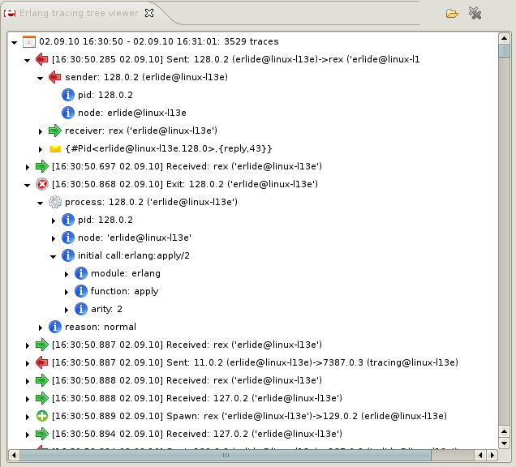

Tree viewer View
Using this view you can browse trace results in a form of tree. Each time there will not be more
traces displayed than
limit
set in preferences window.
There are 3 buttons for setting which traces will be displayed:
- Show previous trace set - shows previous maxTraces traces
startIndex = currentIndex - maxTraces, endIndex = currentIndex - 1
- Show next trace set - shows next maxTraces traces
startIndex = currentIndex + maxTraces, endIndex = currentIndex + 2 * maxTraces - 1
- Show selected trace set - shows maxTraces traces starting from trace with
index specified in textbox next to this button
startIndex = selectedIndex, endIndex = selectedIndex + maxTraces - 1
Indexes of displayed traces will be from following set: [max(1, startIndex), min(endIndex, amountOfTraces)].
Each event type is represented by different icon. Tree nodes can be unfolded to get more details
about particular event.

Tree viewer
When you double click on node that represents module file containing its definition will be opened in editor. The
same is with node representing function that was called - file containing its module will be opened
and cursor will be set at the begining of function's definition.